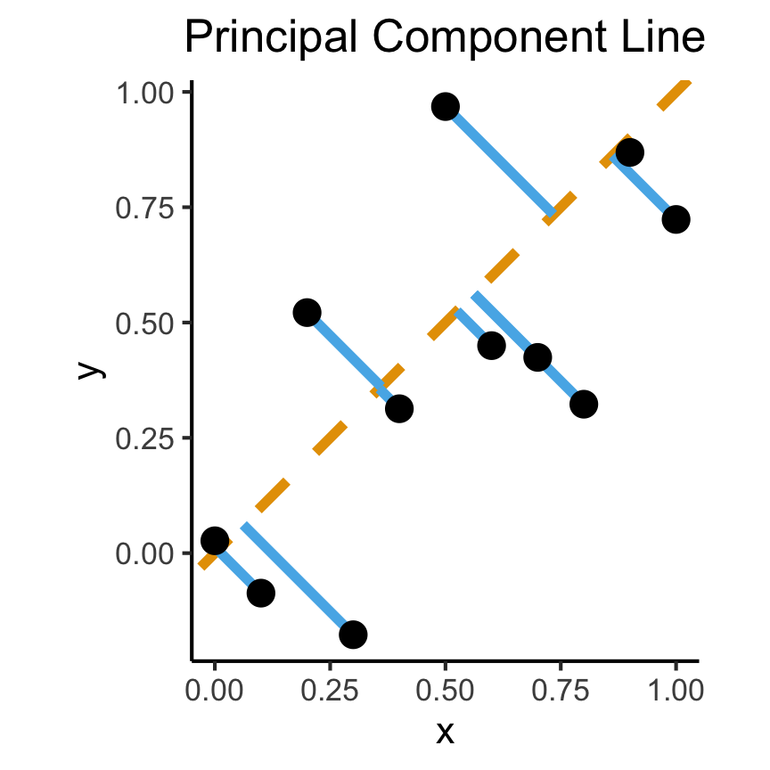
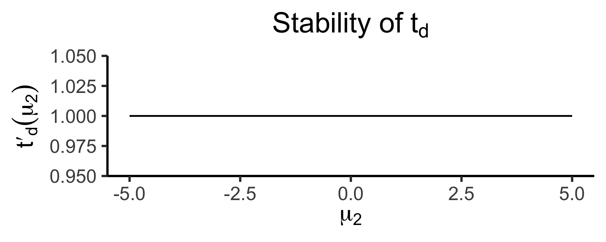

Week 12: Hypothesis Testing
DSAN 5100: Probabilistic Modeling and Statistical Computing
Section 03
Tuesday, November 12, 2024
Classical Hypothesis Testing
\[ \DeclareMathOperator*{\argmax}{argmax} \DeclareMathOperator*{\argmin}{argmin} \newcommand{\bigexp}[1]{\exp\mkern-4mu\left[ #1 \right]} \newcommand{\bigexpect}[1]{\mathbb{E}\mkern-4mu \left[ #1 \right]} \newcommand{\definedas}{\overset{\text{defn}}{=}} \newcommand{\definedalign}{\overset{\phantom{\text{defn}}}{=}} \newcommand{\eqeventual}{\overset{\text{eventually}}{=}} \newcommand{\Err}{\text{Err}} \newcommand{\expect}[1]{\mathbb{E}[#1]} \newcommand{\expectsq}[1]{\mathbb{E}^2[#1]} \newcommand{\fw}[1]{\texttt{#1}} \newcommand{\given}{\mid} \newcommand{\green}[1]{\color{green}{#1}} \newcommand{\heads}{\outcome{heads}} \newcommand{\iid}{\overset{\text{\small{iid}}}{\sim}} \newcommand{\lik}{\mathcal{L}} \newcommand{\loglik}{\ell} \newcommand{\mle}{\textsf{ML}} \newcommand{\nimplies}{\;\not\!\!\!\!\implies} \newcommand{\orange}[1]{\color{orange}{#1}} \newcommand{\outcome}[1]{\textsf{#1}} \newcommand{\param}[1]{{\color{purple} #1}} \newcommand{\pgsamplespace}{\{\green{1},\green{2},\green{3},\purp{4},\purp{5},\purp{6}\}} \newcommand{\prob}[1]{P\left( #1 \right)} \newcommand{\purp}[1]{\color{purple}{#1}} \newcommand{\spacecap}{\; \cap \;} \newcommand{\spacewedge}{\; \wedge \;} \newcommand{\tails}{\outcome{tails}} \newcommand{\Var}[1]{\text{Var}[#1]} \newcommand{\bigVar}[1]{\text{Var}\mkern-4mu \left[ #1 \right]} \]
Classical Test 1: The \(z\)-Test
- Null hypothesis: \(H_0: \mu = \mu_0\); Test statistic \(Z = \frac{\overline{X} - \mu_0}{\sigma / \sqrt{N}}\)
| Alternative Hypothesis | P-Value Determination |
|---|---|
| \(H_A: \mu > \mu_0\) | Area under the standard normal curve to the right of \(z\) |
| \(H_A: \mu < \mu_0\) | Area under the standard normal curve to the left of \(z\) |
| \(H_A: \mu \neq \mu_0\) | \(2~ \cdot\) (Area under the standard normal curve to the right of \(|z|\)) |
- Assumptions: A normal population distribution with known value of \(\sigma\).
Example 1: Bird Wingspans
- Trying to figure out the population distribution of bird wingspans.
- We hypothesize \(\mu_0 = 120\text{cm}\)
- Somehow we know the population variance \(\sigma = 20\text{cm}\), and we know that bird wingspans form a normal distribution, but we don’t know the true \(\mu\):
Code
library(tidyverse)
hyp_mu <- 120
sigma <- 20
bird_dnorm <- function(x) dnorm(x, mean=hyp_mu, sd=sigma)
sigma_df <- tribble(
~x,
hyp_mu - 3 * sigma,
hyp_mu - 2 * sigma,
hyp_mu - 1 * sigma,
hyp_mu + 1 * sigma,
hyp_mu + 2 * sigma,
hyp_mu + 3 * sigma
)
sigma_df <- sigma_df |> mutate(
y = 0,
xend = x,
yend = bird_dnorm(x)
)
plot_rad <- 4 * sigma
plot_bounds <- c(hyp_mu - plot_rad, hyp_mu + plot_rad)
bird_plot <- ggplot(data=data.frame(x=plot_bounds), aes(x=x)) +
stat_function(fun=bird_dnorm, linewidth=g_linewidth) +
geom_vline(aes(xintercept=hyp_mu), linewidth=g_linewidth) +
geom_segment(data=sigma_df, aes(x=x, y=y, xend=xend, yend=yend), linewidth=g_linewidth, linetype="dashed") +
dsan_theme("half") +
labs(
title = "Our Hypothesized Bird Distribution",
x = "Wingspan Values (m)",
y = "Probability Density"
)
bird_plotA Wild Sample Appears!
- While we are pondering, someone runs into the room and tosses us a big crate \(\mathbf{X}\), a random sample of \(N = 16\) birds from the population üò∞
- Recovering from the shock, we measure each bird’s wingspan \(X_i\) and find \(\overline{X} = 131\text{cm}\)
- What can we infer about our hypothesized \(\mu\), now that we have a sample statistic \(\overline{X}\)?
- We cannot just plot \(\overline{X} = 131\) on the hypothesized bird distribution from the previous slide (an easy mistake to make!)
- Apples and oranges: the distribution below is a distribution of individual bird wingspans, but \(\overline{X}\) is a mean of 16 bird wingspans
- What we can do is: think about what the distribution of sample means from \(N = 16\) samples would look like if \(\mu = \mu_0\)!
What Would Sample Means Look Like If Hypothesis Was True?
- What we know, from asymptotic sample theory, is that \(Z = \frac{\overline{X} - \mu}{\sigma / \sqrt{N}}\) is approximately standard normal, for sufficiently large values of \(N\)!
- So, let’s (1) plot this distribution, for a bunch of potential sample means, and then (2) see where our actual observed sample mean lies on this distribution!
- Sanity check: let’s actually simulate taking sample means from 1000 size-16 samples:
Code
simulate_sample_mean <- function(N, mu, sigma) {
samples <- rnorm(N, mu, sigma)
sample_mean <- mean(samples)
return(sample_mean)
}
N <- 16
obs_sample_mean <- 129
num_reps <- 10000
sample_means <- as_tibble(replicate(num_reps, simulate_sample_mean(N, hyp_mu, sigma)))
asymp_dnorm <- function(x) dnorm((x - hyp_mu)/(sigma / sqrt(N)), 0, 1)
ggplot() +
geom_histogram(
data=sample_means,
aes(x=value, y=5*after_stat(density)),
binwidth=1) +
stat_function(
data=data.frame(x=c(100,140)),
aes(x=x, color='asymp'),
fun=asymp_dnorm,
linewidth = g_linewidth
) +
geom_segment(
aes(x = obs_sample_mean, xend=obs_sample_mean, y=-Inf, yend=Inf, color='obs'),
linewidth = g_linewidth
) +
dsan_theme("half") +
labs(
x = "Simulated Sample Mean",
y = "(Empirical) Density",
title = paste0(num_reps," Simulated Sample Means, N = 16")
) +
scale_color_manual(values=c('asymp'='black', 'obs'=cbPalette[1]), labels=c('asymp'='Asymptotic\nDistribution', 'obs'='Observed\nSample Mean')) +
remove_legend_title()Right-Tailed Test
- Null hypothesis (in all cases) is \(H_0: \mu = \mu_0\); Right-tailed test is of alternative hypothesis \(H_A: \mu > \mu_0\)
- We reject the null if the observed sample mean \(\overline{X} = 131\) is too unlikely in the world where the null is true: \(Z(\overline{X}) \approx 1.8\)
- What cutoff should we use for “too unlikely”? (See last week’s slides…) here we’ll use \(\alpha = 0.05\): \(\int_{1.645}^{\infty}\varphi(x)dx = 0.05\), so \(1.645\) is our “critical” (cutoff) value
Code
label_df_signif_int <- tribble(
~x, ~y, ~label,
0.55, 0.04, "95% Signif.\nCutoff"
)
signif_cutoff <- 1.645
funcShaded <- function(x, lower_bound, upper_bound){
y <- dnorm(x)
y[x < lower_bound | x > upper_bound] <- NA
return(y)
}
funcShadedIntercept <- function(x) funcShaded(x, int_tstat, Inf)
funcShadedSignif <- function(x) funcShaded(x, signif_cutoff, Inf)
compute_z_val <- function(x) {
return ((x - hyp_mu) / (sigma / sqrt(N)))
}
obs_zval <- compute_z_val(obs_sample_mean)
obs_zval_str <- sprintf("%.2f", obs_zval)
sample_dnorm <- function(x) dnorm(compute_z_val(x))
ggplot(data=data.frame(x=c(-3,3)), aes(x=x)) +
stat_function(fun=dnorm, linewidth=g_linewidth) +
#geom_segment(data=sigma_df, aes(x=x, y=y, xend=xend, yend=yend), linewidth=g_linewidth, linetype="dashed") +
stat_function(fun = funcShadedSignif, geom = "area", fill = "grey", alpha = 0.333) +
geom_vline(aes(xintercept = signif_cutoff), linewidth=g_linewidth, linetype="dashed") +
geom_text(label_df_signif_int, mapping = aes(x = x, y = y, label = label), size = 8) +
geom_vline(aes(xintercept = obs_zval, color='sample_mean'), linewidth=g_linewidth) +
dsan_theme("half") +
labs(
title = "z-Test Distribution",
x = "z Scores",
y = "Probability Density"
) +
scale_color_manual(values=c('sample_mean'=cbPalette[1]), labels=c('sample_mean'='Z(Observed Sample Mean)')) +
remove_legend_title()- Since \(Z(\overline{X}) > 1.645\), we reject the null hypothesis that this sample mean was generated by a distribution with mean \(\mu_0\)!
Two-Tailed Test
- Null hypothesis (in all cases) is \(H_0: \mu = \mu_0\); Two-tailed test is of alternative hypothesis \(H_A: \mu \neq \mu_0\) (the actual logical negation of the null hypothesis…)
- Reject the null if observed sample mean \(\overline{X} = 131\) is too unlikely in null world
- What cutoff should we use for “too unlikely”? Here we’ll use \(\alpha = 0.05\), but for a two tailed test we find \(\int_{-\infty}^{-1.96}\varphi(x)dx + \int_{1.96}^{\infty}\varphi(x)dx = 0.05\), so \(1.96\) is our “critical” (cutoff) value
Code
signif_cutoff <- 1.96
neg_signif_cutoff <- -signif_cutoff
label_df_signif_int <- tribble(
~x, ~y, ~label,
-2.45, 0.18, paste0("Left\nCutoff\n(",neg_signif_cutoff,")"),
2.45, 0.18, paste0("Right\nCutoff\n(",signif_cutoff,")")
)
funcShaded <- function(x, lower_bound, upper_bound){
y <- dnorm(x)
y[x < lower_bound | x > upper_bound] <- NA
return(y)
}
funcShadedIntercept <- function(x) funcShaded(x, int_tstat, Inf)
funcShadedNegSignif <- function(x) funcShaded(x, -Inf, neg_signif_cutoff)
funcShadedSignif <- function(x) funcShaded(x, signif_cutoff, Inf)
compute_z_val <- function(x) {
return ((x - hyp_mu) / (sigma / sqrt(N)))
}
obs_zval <- compute_z_val(obs_sample_mean)
sample_dnorm <- function(x) dnorm(compute_z_val(x))
ggplot(data=data.frame(x=c(-3,3)), aes(x=x)) +
stat_function(fun=dnorm, linewidth=g_linewidth) +
#geom_segment(data=sigma_df, aes(x=x, y=y, xend=xend, yend=yend), linewidth=g_linewidth, linetype="dashed") +
stat_function(fun = funcShadedSignif, geom = "area", fill = "grey", alpha = 0.333) +
stat_function(fun = funcShadedNegSignif, geom = "area", fill = "grey", alpha = 0.333) +
geom_vline(aes(xintercept = neg_signif_cutoff), linewidth=g_linewidth, linetype="dashed") +
geom_vline(aes(xintercept = signif_cutoff), linewidth=g_linewidth, linetype="dashed") +
geom_text(label_df_signif_int, mapping = aes(x = x, y = y, label = label), size = 8) +
geom_vline(aes(xintercept = obs_zval, color='sample_mean'), linewidth=g_linewidth) +
dsan_theme("half") +
labs(
title = "z-Test Distribution",
x = "z Scores",
y = "Probability Density"
) +
scale_color_manual(values=c('sample_mean'=cbPalette[1]), labels=c('sample_mean'='Z(Observed Sample Mean)')) +
remove_legend_title()- Since \(|Z(\overline{X})| < 1.96\), we fail to reject the null hypothesis that this sample mean was generated by a distribution with mean \(\mu_0\)!
Errors in Classical Hypothesis Testing
- Since we’re trying to infer something about the population using only a sample, we may make one of the following types of errors:
- Type I Error
- Type II Error
| \(H_0\) is: | ||
|---|---|---|
| Decision: | True | False |
| Do not reject \(H_0\) | Correct decision | Type II error |
| Reject \(H_0\) | Type I error | Correct decision |
Hypothesis Testing for Regression Analysis
What Is Regression?
- If science is understanding relationships between variables, regression is the most basic but fundamental tool we have to start measuring these relationships
- Often exactly what humans do when we see data!
psychology psychology
trending_flat
The Goal
- Whenever you carry out a regression, keep the goal in the front of your mind:
The Goal of Regression
Find a line \(\widehat{y} = mx + b\) that best predicts \(Y\) for given values of \(X\)
How Do We Define “Best”?
- Intuitively, two different ways to measure how well a line fits the data:
Code
set.seed(5100)
N <- 11
x <- seq(from = 0, to = 1, by = 1 / (N - 1))
y <- x + rnorm(N, 0, 0.25)
mean_y <- mean(y)
spread <- y - mean_y
df <- tibble(x = x, y = y, spread = spread)
ggplot(df, aes(x=x, y=y)) +
geom_abline(slope=1, intercept=0, linetype="dashed", color=cbPalette[1], linewidth=g_linewidth*2) +
geom_segment(xend=(x+y)/2, yend=(x+y)/2, linewidth=g_linewidth*2, color=cbPalette[2]) +
geom_point(size=g_pointsize) +
coord_equal() +
dsan_theme("full") +
labs(
title = "Principal Component Line"
)
Code
ggplot(df, aes(x=x, y=y)) +
geom_point(size=g_pointsize) +
geom_abline(slope=1, intercept=0, linetype="dashed", color=cbPalette[1], linewidth=g_linewidth*2) +
geom_segment(xend=x, yend=x, linewidth=g_linewidth*2, color=cbPalette[2]) +
dsan_theme("full") +
labs(
title = "Regression Line"
) +
coord_equal()Principal Component Analysis
Principal Component Line allows projecting data onto its dimension of highest variance
More simply: PCA can discover meaningful axes in data (unsupervised learning / exploratory data analysis settings)
Code
library(readr)
library(ggplot2)
gdp_df <- read_csv("assets/gdp_pca.csv")
dist_to_line <- function(x0, y0, a, c) {
numer <- abs(a * x0 - y0 + c)
denom <- sqrt(a * a + 1)
return(numer / denom)
}
# Finding PCA line for industrial vs. exports
x <- gdp_df$industrial
y <- gdp_df$exports
lossFn <- function(lineParams, x0, y0) {
a <- lineParams[1]
c <- lineParams[2]
return(sum(dist_to_line(x0, y0, a, c)))
}
o <- optim(c(0, 0), lossFn, x0 = x, y0 = y)
ggplot(gdp_df, aes(x = industrial, y = exports)) +
geom_point(size=g_pointsize/2) +
geom_abline(aes(slope = o$par[1], intercept = o$par[2], color="pca"), linewidth=g_linewidth, show.legend = TRUE) +
geom_smooth(aes(color="lm"), method = "lm", se = FALSE, linewidth=g_linewidth, key_glyph = "blank") +
scale_color_manual(element_blank(), values=c("pca"=cbPalette[2],"lm"=cbPalette[1]), labels=c("Regression","PCA")) +
dsan_theme("half") +
remove_legend_title() +
labs(
title = "PCA Line vs. Regression Line",
x = "Industrial Production (% of GDP)",
y = "Exports (% of GDP)"
)- See here for an amazing blog post using PCA to explore UN voting patterns!
Create Your Own Dimension!
Code
ggplot(gdp_df, aes(pc1, .fittedPC2)) +
geom_point(size = g_pointsize/2) +
geom_hline(aes(yintercept=0, color='PCA Line'), linetype='solid', size=g_linesize) +
geom_rug(sides = "b", linewidth=g_linewidth/1.2, length = unit(0.1, "npc"), color=cbPalette[3]) +
expand_limits(y=-1.6) +
scale_color_manual(element_blank(), values=c("PCA Line"=cbPalette[2])) +
dsan_theme("full") +
remove_legend_title() +
labs(
title = "Exports vs. Industrial Production in Principal Component Space",
x = "First Principal Component (Dimension of Greatest Variance)",
y = "Second Principal Component"
)
And Use It for EDA
Code
library(dplyr)
library(tidyr)
plot_df <- gdp_df %>% select(c(country_code, pc1, agriculture, military))
long_df <- plot_df %>% pivot_longer(!c(country_code, pc1), names_to = "var", values_to = "val")
long_df <- long_df |> mutate(
var = case_match(
var,
"agriculture" ~ "Agricultural Production",
"military" ~ "Military Spending"
)
)
ggplot(long_df, aes(x = pc1, y = val, facet = var)) +
geom_point() +
facet_wrap(vars(var), scales = "free") +
dsan_theme("full") +
labs(
x = "Industrial-Export Dimension",
y = "% of GDP"
)But in Our Case…
- \(x\) and \(y\) dimensions already have meaning, and we have a hypothesis about \(x \rightarrow y\)!
The Regression Hypothesis \(\mathcal{H}_{\text{reg}}\)
Given data \((X, Y)\), we estimate \(\widehat{y} = \widehat{\beta_0} + \widehat{\beta_1}x\), hypothesizing that:
- Starting from \(y = \widehat{\beta_0}\) when \(x = 0\) (the intercept),
- An increase of \(x\) by 1 unit is associated with an increase of \(y\) by \(\widehat{\beta_1}\) units (the coefficient)
- We want to measure how well our line predicts \(y\) for any given \(x\) value \(\implies\) vertical distance from regression line
Key Features of Regression Line
- Regression line is BLUE: Best Linear Unbiased Estimator
- What exactly is it the “best” linear estimator of?
\[ \widehat{y} = \underbrace{\widehat{\beta_0}}_{\small\begin{array}{c}\text{Predicted} \\[-5mm] \text{intercept}\end{array}} + \underbrace{\widehat{\beta_1}}_{\small\begin{array}{c}\text{Predicted} \\[-4mm] \text{slope}\end{array}}\cdot x \]
is chosen so that
\[ \theta = \left(\widehat{\beta_0}, \widehat{\beta_1}\right) = \argmin_{\beta_0, \beta_1}\left[ \sum_{x_i \in X} \left(\overbrace{\widehat{y}(x_i)}^{\small\text{Predicted }y} - \overbrace{\expect{Y \mid X = x_i}}^{\small \text{Avg. }y\text{ when }x = x_i}\right)^2 \right] \]
Regression in R
Call:
lm(formula = military ~ industrial, data = gdp_df)
Residuals:
Min 1Q Median 3Q Max
-2.3354 -1.0997 -0.3870 0.6081 6.7508
Coefficients:
Estimate Std. Error t value Pr(>|t|)
(Intercept) 0.61969 0.59526 1.041 0.3010
industrial 0.05253 0.02019 2.602 0.0111 *
---
Signif. codes: 0 '***' 0.001 '**' 0.01 '*' 0.05 '.' 0.1 ' ' 1
Residual standard error: 1.671 on 79 degrees of freedom
(8 observations deleted due to missingness)
Multiple R-squared: 0.07895, Adjusted R-squared: 0.06729
F-statistic: 6.771 on 1 and 79 DF, p-value: 0.01106lm Syntax
Interpreting Output
Call:
lm(formula = military ~ industrial, data = gdp_df)
Residuals:
Min 1Q Median 3Q Max
-2.3354 -1.0997 -0.3870 0.6081 6.7508
Coefficients:
Estimate Std. Error t value Pr(>|t|)
(Intercept) 0.61969 0.59526 1.041 0.3010
industrial 0.05253 0.02019 2.602 0.0111 *
--- Signif. codes: 0 '***' 0.001 '**' 0.01 '*' 0.05 '.' 0.1 ' ' 1 Residual standard error: 1.671 on 79 degrees of freedom (8 observations deleted due to missingness) Multiple R-squared: 0.07895, Adjusted R-squared: 0.06729 F-statistic: 6.771 on 1 and 79 DF, p-value: 0.01106
Zooming In: Coefficients
| Estimate | Std. Error | t value | Pr(>|t|) | ||
|---|---|---|---|---|---|
| (Intercept) | 0.61969 | 0.59526 | 1.041 | 0.3010 | |
| industrial | 0.05253 | 0.02019 | 2.602 | 0.0111 | * |
| \(\widehat{\beta}\) | Uncertainty | Test statistic | How extreme is test stat? | Statistical significance |
\[ \widehat{y} \approx \class{cb1}{\overset{\beta_0}{\underset{\small \pm 0.595}{0.620}}} + \class{cb2}{\overset{\beta_1}{\underset{\small \pm 0.020}{0.053}}} \cdot x \]
Zooming In: Significance
| Estimate | Std. Error | t value | Pr(>|t|) | ||
|---|---|---|---|---|---|
| (Intercept) | 0.61969 | 0.59526 | 1.041 | 0.3010 | |
| industrial | 0.05253 | 0.02019 | 2.602 | 0.0111 | * |
| \(\widehat{\beta}\) | Uncertainty | Test statistic | How extreme is test stat? | Statistical significance |
Code
library(ggplot2)
int_tstat <- 1.041
int_tstat_str <- sprintf("%.02f", int_tstat)
label_df_int <- tribble(
~x, ~y, ~label,
0.25, 0.05, paste0("P(t > ",int_tstat_str,")\n= 0.3")
)
label_df_signif_int <- tribble(
~x, ~y, ~label,
2.7, 0.075, "95% Signif.\nCutoff"
)
funcShaded <- function(x, lower_bound, upper_bound){
y <- dnorm(x)
y[x < lower_bound | x > upper_bound] <- NA
return(y)
}
funcShadedIntercept <- function(x) funcShaded(x, int_tstat, Inf)
funcShadedSignif <- function(x) funcShaded(x, 1.96, Inf)
ggplot(data=data.frame(x=c(-3,3)), aes(x=x)) +
stat_function(fun=dnorm, linewidth=g_linewidth) +
geom_vline(aes(xintercept=int_tstat), linewidth=g_linewidth) +
geom_vline(aes(xintercept = 1.96), linewidth=g_linewidth, linetype="dashed") +
stat_function(fun = funcShadedIntercept, geom = "area", fill = cbPalette[1], alpha = 0.5) +
stat_function(fun = funcShadedSignif, geom = "area", fill = "grey", alpha = 0.333) +
geom_text(label_df_int, mapping = aes(x = x, y = y, label = label), size = 10) +
geom_text(label_df_signif_int, mapping = aes(x = x, y = y, label = label), size = 8) +
# Add single additional tick
scale_x_continuous(breaks=c(-2, 0, int_tstat, 2), labels=c("-2","0",int_tstat_str,"2")) +
dsan_theme("quarter") +
labs(
title = "t Value for Intercept",
x = "t",
y = "Density"
) +
theme(axis.text.x = element_text(colour = c("black", "black", cbPalette[1], "black")))
Code
library(ggplot2)
coef_tstat <- 2.602
coef_tstat_str <- sprintf("%.02f", coef_tstat)
label_df_coef <- tribble(
~x, ~y, ~label,
3.65, 0.06, paste0("P(t > ",coef_tstat_str,")\n= 0.01")
)
label_df_signif_coef <- tribble(
~x, ~y, ~label,
1.05, 0.03, "95% Signif.\nCutoff"
)
funcShadedCoef <- function(x) funcShaded(x, coef_tstat, Inf)
ggplot(data=data.frame(x=c(-4,4)), aes(x=x)) +
stat_function(fun=dnorm, linewidth=g_linewidth) +
geom_vline(aes(xintercept=coef_tstat), linetype="solid", linewidth=g_linewidth) +
geom_vline(aes(xintercept=1.96), linetype="dashed", linewidth=g_linewidth) +
stat_function(fun = funcShadedCoef, geom = "area", fill = cbPalette[2], alpha = 0.5) +
stat_function(fun = funcShadedSignif, geom = "area", fill = "grey", alpha = 0.333) +
# Label shaded area
geom_text(label_df_coef, mapping = aes(x = x, y = y, label = label), size = 10) +
# Label significance cutoff
geom_text(label_df_signif_coef, mapping = aes(x = x, y = y, label = label), size = 8) +
coord_cartesian(clip = "off") +
# Add single additional tick
scale_x_continuous(breaks=c(-4, -2, 0, 2, coef_tstat, 4), labels=c("-4", "-2","0", "2", coef_tstat_str,"4")) +
dsan_theme("quarter") +
labs(
title = "t Value for Coefficient",
x = "t",
y = "Density"
) +
theme(axis.text.x = element_text(colour = c("black", "black", "black", "black", cbPalette[2], "black")))The Residual Plot
- A key assumption required for OLS: “homoskedasticity”
- Given our model \[ y_i = \beta_0 + \beta_1x_i + \varepsilon_i \] the errors \(\varepsilon_i\) should not vary systematically with \(i\)
- Formally: \(\forall i \left[ \Var{\varepsilon_i} = \sigma^2 \right]\)
Code
library(broom)
gdp_resid_df <- augment(lin_model)
ggplot(gdp_resid_df, aes(x = .fitted, y = .resid)) +
geom_point(size = g_pointsize/2) +
geom_hline(yintercept=0, linetype="dashed") +
dsan_theme("quarter") +
labs(
title = "Residual Plot for Industrial ~ Military",
x = "Fitted Value",
y = "Residual"
)
Code
x <- 1:80
errors <- rnorm(length(x), 0, x^2/1000)
y <- x + errors
het_model <- lm(y ~ x)
df_het <- augment(het_model)
ggplot(df_het, aes(x = .fitted, y = .resid)) +
geom_point(size = g_pointsize / 2) +
geom_hline(yintercept = 0, linetype = "dashed") +
dsan_theme("quarter") +
labs(
title = "Residual Plot for Heteroskedastic Data",
x = "Fitted Value",
y = "Residual"
)Multiple Linear Regression
- Notation: \(x_{i,j}\) = value of independent variable \(j\) for person/observation \(i\)
- \(M\) = total number of independent variables
\[ \widehat{y}_i = \beta_0 + \beta_1x_{i,1} + \beta_2x_{i,2} + \cdots + \beta_M x_{i,M} \]
- \(\beta_j\) interpretation: a one-unit increase in \(x_{i,j}\) is associated with a \(\beta_j\) unit increase in \(y_i\), holding all other independent variables constant
The \(F\)-Test
- \(t\)-test is to single-variable regression as \(F\)-test is to multiple regression
- \(H_A: (\beta_1 = 0) \wedge (\beta_2 = 0) \wedge \cdots \wedge (\beta_M = 0)\)
- (“Give up, it’s not worth doing this regression”)
- \(H_0: (\beta_1 \neq 0) \vee (\beta_2 \neq 0) \vee \cdots \vee (\beta_M \neq 0)\)
- (“Your regression has at least one redeeming quality”)
Moving Towards Bayesian Hypothesis Testing
Key Insight From Behavioral Economics
- Data always has an interpretive context
- Humans are not very good at placing data in that context
Observations vs. Base Rates
Steve is very shy and withdrawn, invariably helpful but with very little interest in people or in the world of reality. A meek and tidy soul, he has a need for order and structure, and a passion for detail.
\(\Pr(\text{Steve is a librarian} \mid \text{description})?\)

Base Rates
- Globally: ~350,000 librarians vs. ~800 million farmers
Code
library(tidyverse)
num_librarians <- 350000
num_farmers <- 800000000
occu_df <- tribble(
~Occupation, ~Count,
"Farmer", num_farmers,
"Librarian", num_librarians,
)
ggplot(occu_df, aes(x=factor(Occupation, levels=c("Librarian","Farmer")), y=Count, fill=Occupation)) +
geom_bar(stat='identity') +
dsan_theme() +
labs(
x = "Occupation",
y = "Count",
title = "Librarians vs. Farmers Globally"
)Sampling From The Globe
\[ \begin{align*} \Pr(\text{Librarian}) &= \frac{350K}{8\text{ Billion}} \approx 0.00004375 \\ \Pr(\text{Farmer}) &= \frac{800\text{ Million}}{8\text{ Billion}} = 0.1 \end{align*} \]
Meaning, if we sample 1 million people, we would expect:
- 44 to be librarians
- 100,000 to be farmers
But Still…
- Let’s say you believe that only 1% of farmers have these traits, while 100% of librarians have these traits. Then, within our sample of 1 million, we would expect:
- 44 to be librarians with these traits
- 1,000 to be farmers with these traits
- \(\implies\) still 22.7 times more likely that Steve is a farmer
The Math
\[ \begin{align*} \Pr(\mathcal{H}_L \mid E) &= \Pr(\text{Steve is librarian} \mid \text{description}) \\ &= \frac{\Pr(\text{description} \mid \text{Steve is librarian})\Pr(\text{Steve is librarian})}{\Pr(\text{description})} \\ &= \frac{(1)(0.00004375)}{\Pr(\text{description})} = \frac{0.00004375}{\Pr(\text{description})} \end{align*} \]
\[ \begin{align*} \Pr(\mathcal{H}_F \mid E) &= \Pr(\text{Steve is farmer} \mid \text{description}) \\ &= \frac{\Pr(\text{description} \mid \text{Steve is farmer})\Pr(\text{Steve is farmer})}{\Pr(\text{description})} \\ &= \frac{(0.01)(0.1)}{\Pr(\text{description})} = \frac{0.001}{\Pr(\text{description})} \\ \end{align*} \]
\[ \implies \frac{\Pr(\mathcal{H}_F \mid E)}{\Pr(\mathcal{H}_L \mid E)} = \frac{ \frac{0.001}{\Pr(\text{description})} }{ \frac{0.00004375}{\Pr(\text{description})} } = \frac{0.001}{0.00004375} \approx 23 \]
The Takeaway
- Classical hypothesis testing, developed in a time before computers or calculators, was an attempt to test hypotheses solely on the basis of the experimental results (then maybe, after the fact, apply a correction to “sneak in” base rates)
- Bayesian hypothesis testing, developed in a time when we have computers, explicitly casts results of experiments as weighted averages of prior evidence and newly-acquired evidence!
Types of Hypotheses
Differences vs. Ratios
- Setting: We have a sample \(\mathbf{X}_1\) taken from a population \(P_1\) and a sample \(\mathbf{X}_2\) taken from a population \(P_2\).
- We care about some variable \(v\) that we measured as part of our sampling: in particular, we care about \(\mu^{(v)}_1\), the mean of this variable in population 1, and \(\mu^{(v)}_2\), the mean of this variable in population 21
- Goal: Test whether the mean of \(v\) in population 1 is equal to the mean of \(v\) in population 2. Formally, we test the hypothesis \(\mathcal{H}\):
\[ \mathcal{H}: \mu_1 = \mu_2 \]
It is ambiguous what test statistic we should use to check this(!), since
\[ \begin{align*} \mu_1 = \mu_2 &\iff \mu_1 - \mu_2 = 0 \\ \mu_1 = \mu_2 &\iff \frac{\mu_1}{\mu_2} = 0 \end{align*} \]
(where we assume, for the second equivalence, that \(\mu_2 \neq 0\))
The Difference, In Math
Code
library(tidyverse)
library(latex2exp)
my_const <- function(x) 1
my_ratio <- function(x) 1/x
#data_df <- data_df |> mutate(
# z = my_diff(x, y)
#)
#print(data_df)
x_label <- TeX("$\\mu_2$")
td_title <- TeX("Stability of $t_d$")
td_label <- TeX("$t'_d(\\mu_2)$")
base_plot <- ggplot(data=data.frame(x=c(-5,5)), aes(x=x)) +
dsan_theme("quarter") +
labs(
x = x_label
)
diff_plot <- base_plot + stat_function(
fun = my_const,
linewidth = g_linewidth
) + labs(
title = td_title,
y = td_label
)
diff_plot
tr_title <- TeX("Stability of $t_r$")
tr_label <- TeX("$t'_r(\\mu_2)$")
ratio_plot <- base_plot + stat_function(
fun = my_ratio,
linewidth = g_linewidth
) + labs(
title = tr_title,
y = tr_label
)
ratio_plotOur test statistic is some function \(t(\mu_1, \mu_2)\).
Let \(t_d(\mu_1, \mu_2) = \mu_1 - \mu_2\)
Let \(t_r(\mu_1, \mu_2) = \frac{\mu_1}{\mu_2}\)
How sensitive are these two ways of defining \(t\) to changes in the individual terms?
\[ t'_d(\mu_2) = \frac{\partial t^-(\mu_1, \mu_2)}{\partial \mu_1} = 1, \]
whereas
\[ t'_r(\mu_2) = \frac{\partial t^\div(\mu_1, \mu_2)}{\partial \mu_1} = \frac{1}{\mu_2} \]

The Takeaway
- In scenarios where \(\mu\) values are far from zero, both behave similarly
- But in scenarios where \(\mu\) values are close to zero, need to be careful about using \(t_r(\mu_1, \mu_2) = \frac{\mu_1}{\mu_2}\)!
- If \(\mu_2\) could feasibly be zero‚Ķ \(t_r(\mu_1, \mu_2) = üíÄüòµüíÄ\)
The \(t\)-Test
Moving From Known \(\rightarrow\) Unknown \(\sigma\)
- Last week: \(z\)-test for scenario where we (somehow) know population variance \(\sigma\)
- This week: More realistic case where we don’t know \(\sigma\), so we estimate it from our sample \(\mathbf{X}\): \(\widehat{\sigma^2} = s^2_{\mathbf{X}}\)
- This means we have recursive uncertainty in our estimates!
\[ \begin{align*} \widehat{\mu}(\mathbf{X}) = f(\mathbf{X}) &= \frac{1}{N}\sum_{i=1}^{N}X_i \\ \widehat{\sigma^2}(\mathbf{X}) = g(\mathbf{X}, \widehat{\mu}(\mathbf{X})) &= \frac{1}{N}\sum_{i=1}^N (X_i - \boxed{\widehat{\mu}(\mathbf{X})})^2 \\ &= \frac{1}{N}\sum_{i=1}^N\left(X_i - \boxed{\frac{1}{N}\sum_{j=1}^NX_j}\right)^2 \end{align*} \]
Errors Now Make Our Estimates Exponentially Worse(!)
- Imagine that when calculating \(\widehat{\mu} = \frac{1}{N}\sum_{i=1}^nX_i\) (recall that this is an unbiased estimator for \(\mu\)), we accidentally add \(\varepsilon\) to every value \(X_i\), so that we instead compute \(\widetilde{\mu} = \frac{1}{N}\sum_{i=1}^n(X_i+\varepsilon) = \widehat{\mu} + \varepsilon\)
- This means our estimate of \(\mu\) is now biased by some amount \(\varepsilon\): while \(\mathbb{E}[\widehat{\mu}] = \mu\), \(\mathbb{E}[\widetilde{\mu}] = \mu + {\color{red}\varepsilon}\)
- How does this affect subsequent estimates of the variance \(\widehat{\sigma^2}\)? Even if we use an unbiased estimator \(\widehat{\sigma^2}\), so that \(\mathbb{E}[\widehat{\sigma^2}] = \sigma^2\), we get something that looks like the following (sweeping some details under the rug):
\[ \mathbb{E}[\widehat{\sigma^2}] = \cdots = \sigma^2 + \mathbb{E}[\varepsilon^2] - 2\varepsilon\mathbb{E}[X_i-\mu] = \sigma^2 + {\color{red}\varepsilon^2} \]
- While our estimate of the mean was off by \({\color{red}\varepsilon}\), our estimate of the variance is off by \({\color{red}\varepsilon^2}\)!
- Taking square root to obtain the standard deviation \(\widehat{\sigma}\) doesn’t “fix” this, either, since \(\sqrt{\sigma^2 + \varepsilon^2} \neq \sigma + \varepsilon\) in general (e.g., \(\sqrt{2^2 + 3^2} = \sqrt{4+9} = \sqrt{13} \neq 2 + 3 = 5\))
\(z\)-Test \(\rightarrow\) \(t\)-Test
Code
library(tidyverse)
my_normal <- function(x) dnorm(x)
my_st <- function(x) dt(x, 2)
ggplot(data=data.frame(x=c(-3,3)), aes(x=x)) +
stat_function(
aes(color='norm'),
fun=my_normal,
linewidth = g_linewidth
) +
stat_function(
aes(color='st'),
fun=my_st,
linewidth = g_linewidth
) +
dsan_theme("half") +
scale_color_manual(
"Distribution",
values=c('norm'=cbPalette[1],'st'=cbPalette[2]),
labels=c('norm'="Standard Normal",'st'="Student's t (df=2)")
) +
remove_legend_title() +
labs(
title = "Standard Normal vs. Student's t Distribution"
)- When we know \(\sigma^2\) but we estimate \(\mu\) from a sample, we represent our uncertainty via test statistic \(z \sim \mathcal{N}(\widehat{\mu}, \sigma^2)\)
- When we estimate both \(\mu\) and \(\sigma^2\) from a sample, we use a test statistic \(t\) with a wider “Student’s \(t\)” Distribution in place of the Normal Distribution: \(t \sim \mathcal{T}(\widehat{\mu}, \widehat{\sigma}^2, N)\)
- As \(N \rightarrow \infty\), \(\mathcal{T}_N(\widehat{\mu},\widehat{\sigma}^2,N) \rightarrow \mathcal{N}(\widehat{\mu},\widehat{\sigma}^2)\)
In R
- Let’s create a tibble containing samples from two populations
Code
library(tidyverse)
library(infer)
nl_height_mean <- 182.535
nl_height_sd <- 8
yemen_height_mean <- 159.887
yemen_height_sd <- 8
N <- 100
nl_sample <- rnorm(N, mean=nl_height_mean, sd = nl_height_sd)
nl_df <- tibble(height=nl_sample, Country="Netherlands")
yemen_sample <- rnorm(N, mean=yemen_height_mean, sd = yemen_height_sd)
yemen_df <- tibble(height=yemen_sample, Country="Yemen")
data_df <- bind_rows(nl_df, yemen_df)
ggplot(data_df, aes(x=height, fill=Country)) +
geom_density(alpha=0.5) +
dsan_theme() +
#xlim(150,200) +
labs(
title = "Mean Heights: Yemen (N=100) vs. Netherlands (N=100)",
x = "Height (cm)",
y = "Sample Probability Density"
) +
scale_fill_manual("Country", values=c('Netherlands'=cbPalette[1], 'Yemen'=cbPalette[2]))- \(H_0: \mu_{\text{NL}} - \mu_{\text{Yem}} = 0\), \(H_A: \mu_{\text{NL}} - \mu_{\text{Yem}} > 0\), \(t = \overline{h}_{\text{NL}} - \overline{h}_{\text{Yem}}\)
The infer Package
It’s easy to find resources on built-in
t.test(), harder to find resources on newer, tidyverse-basedt_test()! üòâSyntax is
t_test(df, formula, order, alternative)order = c(pop1, pop2)\(\rightarrow H_0: \mu_1 - \mu_2 = 0\)alternative = {"two-sided", "greater", "less"}formulaslightly trickier, but tldr is:variable you're computing means for ~ variable splitting df into two populations
The Chi-Squared Test of Independence


What Hypothesis Are We Testing?
- \(z\)-Tests and \(t\)-Tests might feel a bit weak: they allow us to hypothesize about a single population parameter, which is nice, but throughout the course we have been talking about distributions, not just means or variances!
- The Chi-Squared Test allows us to hypothesize about distributions: for categorical random variables \(X_1\) and \(X_2\) we can test the null and alternative hypotheses:
\[ \begin{align*} H_0: X_1 \perp X_2 &\iff \Pr(X_1 = v_1 \mid X_2 = v_2) = \Pr(X_1 = v_1) \\ H_A: X_1 \not\perp X_2 &\iff \Pr(X_1 = v_1 \mid X_2 = v_2) \neq \Pr(X_1 = v_1) \end{align*} \]
- \(H_0\) in words: “learning the value of \(X_2\) does not give me any information about the value of \(X_1\), and vice-versa”
Base Notation
- (May seem tedious, but you will be thankful later if you use this notation!)
- Let \(N\) be the total number of samples we have in our dataset
- Let \(K_1\) be the total number of categories that \(X_1\) can take on: formally, \(K_1 = |\mathcal{R}_{X_1}|\).
- Similarly, let \(K_2 = |\mathcal{R}_{X_2}|\), the cardinality of the support of \(X_2\).
- We will use a lowercase \(k_{1,i}\) to represent the \(i\)th possible value of \(X_1\), (i.e., the \(i\)th element of \(\mathcal{R}_{X_1}\)), and \(k_{2,i}\) to represent the \(i\)th possible value of \(\mathcal{R}_{X_2}\).
- e.g., \(k_{1,1}\) is the first element of \(\mathcal{R}_{X_1}\), \(k_{1,2}\) is the second element of \(\mathcal{R}_{X_2}\), and so on.
Joint and Marginal Frequencies
Now we can define the central quantities that the chi-squared test involves: the frequencies (i.e., unnormalized probabilities) of observations with certain (categorical) variable values:
\(f_{i,j}\): The number of observations for which \(X_1 = k_{1,i}\) (the \(i\)th value that \(X_1\) can take on) and \(X_2 = k_{2,j}\) (the \(j\)th value that \(X_2\) can take on).
- Example: \(f_{1,3}\), represents the number of observations for which \(X_1 = k_{1,1}\) and \(X_2 = k_{2,3}\).
Let \(f_{i,\cdot} = \sum_{j=1}^{K_2}f_{i,j}\) be the number of observations for which \(X_1 = k_{1,i}\), regardless of the value of \(X_2\) (hence we call this the marginal frequency of \(X_1 = k_{1,i}\)).
- \(f_{7,\cdot}\), for example, represents the number of observations for which \(X_1 = k_{1,7}\), regardless of the values of \(X_2\) across these observations.
- This is called “dot notation”, and makes it easy for us to notationally represent which marginal distributions we are talking about.
Similarly, let \(f_{\cdot, j} = \sum_{i=1}^{K_1}f_{i,j}\) be the marginal frequency with which songs have \(V_2 = k_j\). \(f_{\cdot, 2}\), for example, represents the number of songs for which the valence value is at level 2 (Moderate), regardless of its artist.
We Made It
- We can finally compute the test statistic for the Chi-Squared Test, \(Q\)!
\[ Q = \sum_{k_1=1}^{K_1}\sum_{k_2=1}^{K_2}\frac{\left(f_{k_1,k_2} - \frac{f_{k_1,\cdot}f_{\cdot,k_2}}{N}\right)^2}{\frac{f_{k_1,\cdot}f_{\cdot, k_2}}{N}} \]
- This test statistic has (by construction) a Chi-Squared Distribution with \((K_1 - 1)(K_2 - 1)\) degrees of freedom
In R
We can compute this test statistic (somewhat laboriously) in R as follows: first let’s create variables representing the supports \(\mathcal{R}_{X_1}\) and \(\mathcal{R}_{X_2}\) for our two random variables \(X_1\) and \(X_2\):
Computing Marginal Frequencies
- Next we pre-compute the marginal frequencies for all possible \(X_1\) values (all elements of \(\mathcal{R}_{X_1}\)) and then for all possible \(X_2\) values (all elements of \(\mathcal{R}_{X_2}\)):
Computing the Test Statistic
- Finally, we can compute the individual bin frequencies \(f_{i,j}\) in a loop (there are more efficient ways to do this, which we’d want to adopt instead if our dataset was much larger, for example):
Code
# q_sum <- 0
# for (k1 in 1:K1) {
# artist_name_value <- L1[k1]
# artist_marginal_freq <- L1_marginal_freqs[k1]
# for (k2 in 1:K2) {
# valence_value <- L2[k2]
# valence_marginal_freq <- L2_marginal_freqs[k2]
# print(paste0("(",artist_name_value,", ",valence_value,")"))
# # Compute the frequency in this bin
# bin_df <- artist_df |> filter(artist_name == artist_name_value & valence_C == valence_value)
# print(nrow(bin_df))
# # And now, since we precomputed the marginal frequencies, we have everything we need!
# joint_freq <- nrow(bin_df)
# marginal_ratio <- (artist_marginal_freq * valence_marginal_freq) / N
# numer <- (joint_freq - marginal_ratio)^2
# denom <- marginal_ratio
# cur_q_val <- numer / denom
# q_sum <- q_sum + cur_q_val
# }
# }
# q_sumInterpretation
- Since we know this test statistic \(Q\) follows (asymptotically/approximately) a chi-squared distribution with \((K_1 - 1)(K_2 - 1)\) degrees of freedom, we can compute the probability of obtaining a test statistic value this high or higher (14.162598), using R’s built-in
dchisq()function:
Drawing Conclusions in Classical World
And so, finally: this tells us that under the null hypothesis that artist_name and valence_C represent draws from independent random variables, the likelihood of obtaining our dataset, or a dataset with a more extreme test statistic, is about 0.00042, or 0.042%.
Therefore, if we are evaluating our hypothesis at the 5% confidence level (or 1% or even 0.1%, because this is a very low probability value/percentage), we conclude that we should reject the null hypothesis that artist name and valence are independent. Therefore (switching from a frequentist to a Bayesian interpretation, mercifully), we increase our degree of belief in the hypothesis that the valence of a song does depend upon the artist making the song.
Drawing Conclusions in Modern (Bayesian) World
This technical conclusion (which focuses only on the results of the statistical hypothesis test), combined with the Bayesian interpretation at the end, lets us say something about “what we’ve learned” about music:
- Our Bayesian prior on the null hypothesis, \(\Pr(H_0) = \Pr(V \perp A)\), was probably quite small: before performing this analysis, we probably did not think that these two variables are independent, since we know that some artists tend to make more sad songs, while other artists tend to make more happy songs (though there are obviously exceptions: bands that tend to make a mix of sad and happy songs).
- Then we performed the analysis, and failed to reject the hypothesis that these two variables are independent.
- Therefore, our Bayesian posterior on \(\Pr(V \perp A)\) should be slightly lower: If our prior probability on \(H_0\) was some value \(p\), our posterior probability now that we’ve performed the study and failed to reject the null hypothesis should be \(p - \varepsilon\), for some appropriate value \(\varepsilon\) representing the relative balance between (our view of) the veracity of the prior vs. the veracity of the test we performed.
- To make it concrete: if we previously believed that \(p = \Pr(H_0) = 0.1\), perhaps now we can update our beliefs such that \(p = \Pr(H_0) = 0.05\). This would represent the case where we lend equal credence in our prior and in our experiement, since then
\[ p_{post} = \frac{1}{2}\Pr(H_0) + \frac{1}{2}\text{Test Result} = \frac{1}{2}(0.1) + \frac{1}{2}(0) = 0.05. \]
References
DSAN 5100-03 W12: Hypothesis Testing